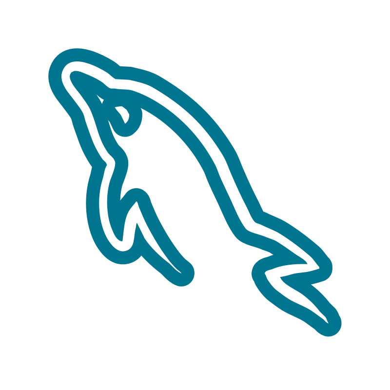
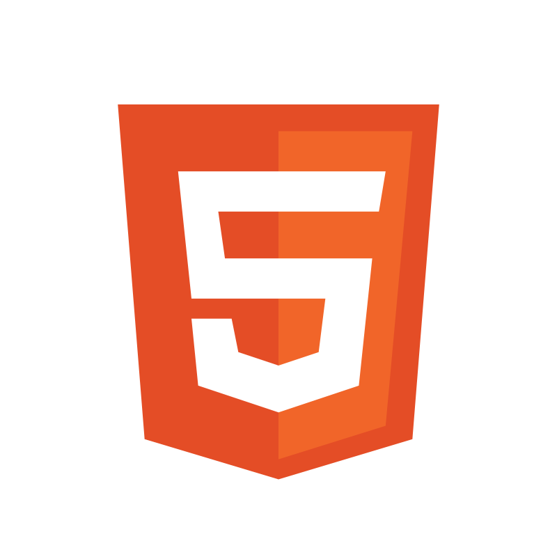
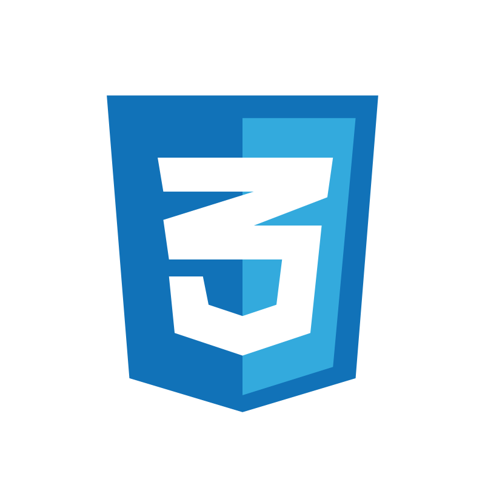
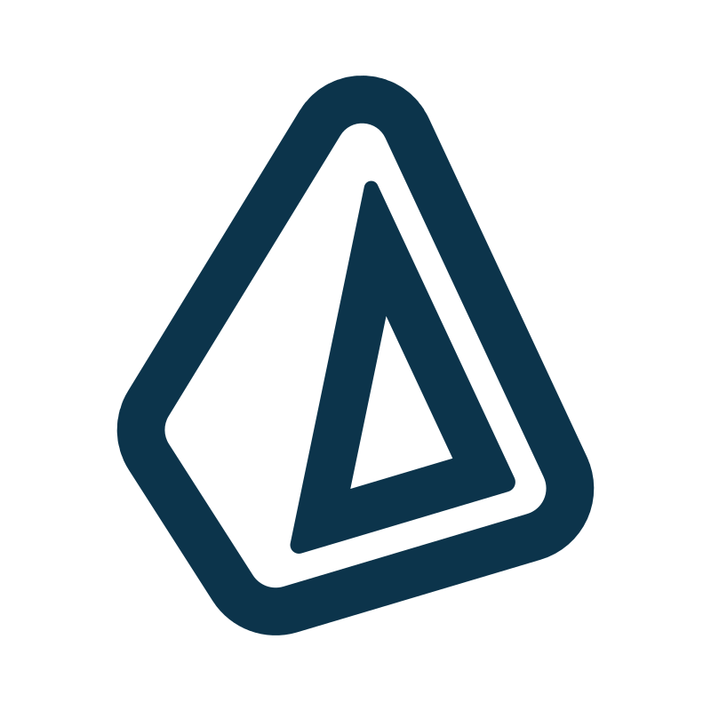
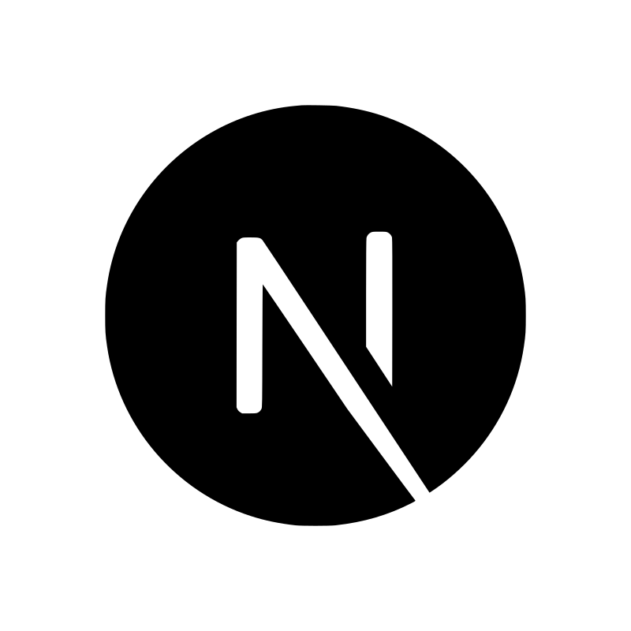
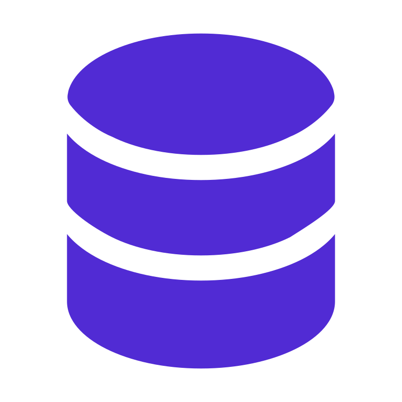

Hey There!
I'm Anthony David
A third-year bachelor student, studying Applied Informatics with a specialization in Development, currently living in Zelzate and studying at College University Ghent or HoGent. Through my education I have gained experience in both Front-End and Back-End Web Development, in addition to Application Development.
VLOT! Campus Sint Laurentius
Lokeren - Prosper Thuysbaertlaan 1
Industrial ICT
Secondary Education Degree
2020 - 2023
Secondary Education Degree
2020 - 2023
Skills:
c++ c# Visual Basic Assembly Electronics PLC Programming
c++ c# Visual Basic Assembly Electronics PLC Programming
College University Ghent - HoGent
Ghent - Valentin Vaerwyckweg 1
Applied Informatics
Bachelor Degree
2023 - Now
Bachelor Degree
2023 - Now
Skills:
Three-Tier Architecture Design Patterns System Management Collaborative Development Web Development App Development
Three-Tier Architecture Design Patterns System Management Collaborative Development Web Development App Development
Arcelor Mittal
Ghent - John Kennedylaan 51
Intership Industrial ICT
Following installment and maintenance of PLC machines.
Following installment and maintenance of PLC machines.
Topics:
Networks Electronics PLC Programming
Networks Electronics PLC Programming
Projects

Kingdomino
A digitised board game, where 3-4 players aim to expand their kingdom efficiently by strategically placing randomized tiles adjacent to its castle or other connected tiles.
This is a school project I co-developed in a group of 4 total during my second semester of my first year at HoGent, following the course Applied Informatics. Created based on processing Use Cases, which were partially given by lecturers, this tested our ability to perform broad analysis on expectations of features and documenting them for smooth collaboration. The tech stack consisted of Java and MySQL, where JavaFX was used for the GUI, to create a desktop application emulating the board game Kingdomino.
Java
MySql
JavaFX
PCompose
A project with the goal of creating a tool to compose a plan for a self built computer by selecting individual parts sourced from different sites to find the best offer easily and ensuring part compatibility.
My first web development project assigned in semester one of year 2 at HoGent. This project was solo and free to choose in subject, it was used as vehicle to learn about API’s, RESTful principles and in general web architecture with the use of popular frameworks such as: React, Koa, Prisma. A highlight of this project is the use of Puppeteer to scrape E-commerce sites to gather data.
React
Koa
Prisma
Puppeteer
Delaware Shopfloor App
A management/information platform where metrics or statuses on production facilities and their machines could be consulted, created for the company Delaware as a proof of concept.
My First project where we based functional requirements on the descriptions of a client. Done in groups of 5, we had to infer the wishes from verbal meetings with the client and gain feedback through presented demo’s. The core of this project was experiencing a small part of corporate structure to development, wherein we followed a scrum schedule. Working in sprints of 2 weeks, delivering features at the end of each and setting new goals for the next, and presenting them to the client to garner feedback and insights on the clients true wishes was the core of this project. What we delivered was available in two forms, as web app and desktop app. The web app was created with NextJS, Koa and Prisma, whilst the desktop app with JavaFX and Jakarta.
NextJS
Koa
Prisma
JavaFX
JDBC
Campus App
An information application designed and created by students for students. Presented as a proof of concept to the college itself as a means to streamline the experience of new and current students when searching info.
The final web development project at Applied Informatics, completed in semester 1 of year 3. Developed in groups of 6 devs, 1 business analyst and 4 system engineers. This project served as a simulation of how development would be structured in a real world scenario. We collaborated with a real client, who wanted a proof of concept for a campus app, from which features and requirements would be analyzed. Analyses consisted of a procedure of eliciting information and converting it to user stories through talks between the business analyst and devs, to then be developed as a web app. In cooperation with the system engineers, this app would be hosted and backed by a robust CI/CD pipeline. This app was created in the .Net ecosystem through: Blazor, ASP.NET and Entity Framework. Jira was also used for collaboration management and structuring as wel as documenting user stories.
Blazor
ASP.NET
Entity Framework
PWA
Technologies
Java
Learnt At

Usage
4 sem.

MySQL
Learnt At
Usage
4 sem.

HTML
Learnt At
Usage
4 sem.

CSS
Learnt At
Usage
4 sem.
Javascript
Learnt At
Usage
3 sem.

Koa
Learnt At
Usage
2 sem.

Prisma
Learnt At
Usage
2 sem.
React
Learnt At
Usage
1 sem.

NextJS
Learnt At
Usage
1 sem.
Blazor
WASM
WASM
Learnt At
Usage
1 sem.
ASP.Net
Core
Core
Learnt At
Usage
1 sem.

EntityFramework
Core
Learnt At
Usage
1 sem.